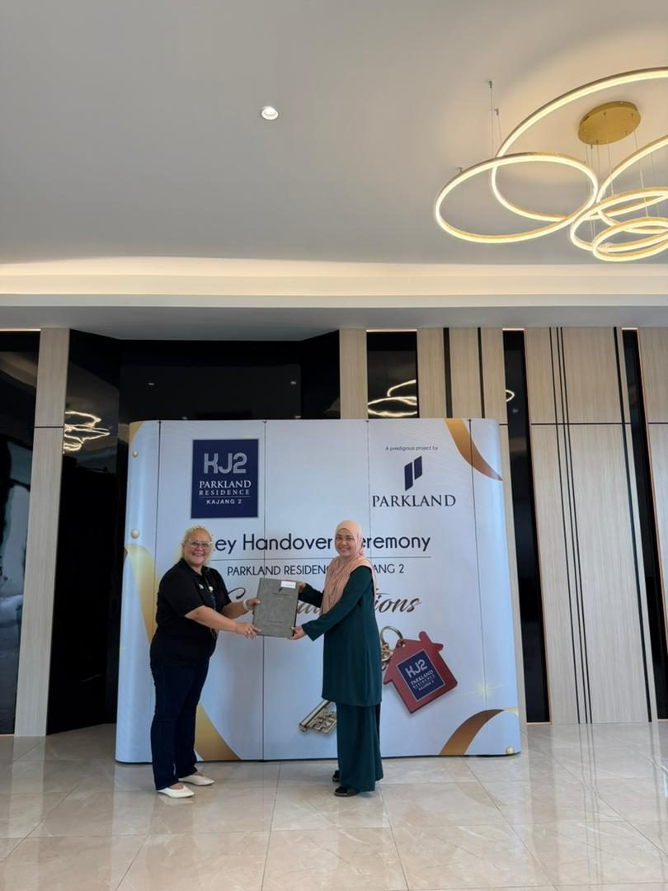

Hey, I'm Nelfar Zulkifli
I have been working in the property management industry since 2014, beginning my career in building administration before progressing into site management and operations.
For eight years, I was directly involved in managing residential developments, including Villa Ros Townhouse and Park Avenue, during my tenure with Clement Management Sdn Bhd.
During my tenure with CBRE-WTW, I managed Greenfield Regency, Tampoi, Southkey Mosaic and Lakefront Southkey, while also providing operational support to other developments, including D' Summit and The Seed, Johor Bahru.
Under SA Property Management Sdn Bhd, I was responsible for managing several developments, including Eco Cascadia, Setia Indah, and Iskandar Residences Medini, Iskandar Puteri, holding a position as Building Manager. Since 2021 till current, I have taken on a broader role with SA Property Management Sdn Bhd, working on the other end of the property management process. Holding a position as Business Development Manager, my responsibilities include assessing developments at the Tender stage, preparing management proposals, Budgets, House Rules, Operational Forms for new projects, and leading the Pre-Vacant Possession, Vacant Possession, Takeover process, ensuring that completed developments are effectively transitioned into professionally managed properties.
With more than a decade of experience in the Property Management Industry, I have gained comprehensive experience across Building Administration, Site Operations, Property Management, Tender Assessment, Client Engagement, Pre-Vacant Possession, Vacant Possession and project Takeovers.
I hold a Master's Degree in Management from Universiti Tun Abdul Razak (UNIRAZAK), Kuala Lumpur.


Developments listed counts every entry across the managed, stabilised and selected project lists. Years in property management is measured from 2014.
Twelve years across four roles
Master in Management
What the work involves
- Property management & building operations
- Technical & non-technical troubleshooting
- Operations reporting
- Site visit & project evaluation
- Preparing House Rules for new projects
- Setting up the management office for the site
- Arranging tenders and vendor interviews with developer representatives
- Preparation of Bills of Quantities
- Management proposals, budgets & operational forms
- Pre-Vacant Possession, Vacant Possession & takeover
- Team leadership & guidance
- JMB / MC / developer coordination
- Client relationship management
- Client presentation
- Tender documentation & interview
- EGM / AGM / townhall support
House Rules written in full for three developments.
Languages — English, Bahasa Malaysia.